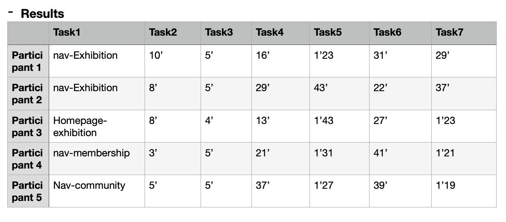
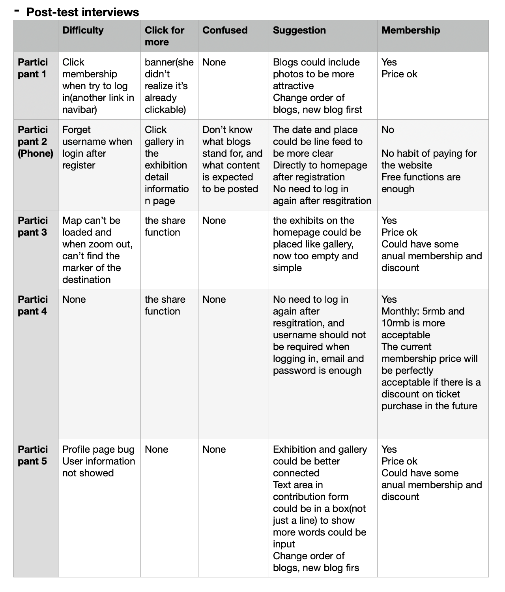

Exhibtions in Chengdu
The website aims to provide an integrated information platform to facilitate exhibition enthusiasts. Generally speaking, users can use the website information browsing function for free, but need to pay for more advanced experiences such as posting blogs and exhibition collections.
The exhibition information and community is the core part of the website, and the users are expected to engage in these parts smoothly. So usability and A/B tests are conducted mainly related to this two parts.The usability test can provide qualitative responses from 5 users about how they operate the whole process any how they feel about the process and the whole website, while AB test results can provide quantitative responses coming from a broader audience to know their page views and whether they’ll submit the forms.
 Here are the tasks and post-test questions:
- Tasks
When you see the homepage, where would you click to know more?
- 1.If you want to see an exhibition, where would you click for more information?
- 2.Try to find the precise location of one exhibition.
- 3.Try to find detail information of chengdu museum.
- 4.Try to send a comment.(log in required) Try to post a blog .
- 5.Try to edit the blog posted.
- 1.What difficulties did you encounter in the process?
- 2.Where do you expect to click for more information? (not available now)
- 3.Are there any categories or layouts that make you confused?
- 4. Do you think you'd be willing to pay for the site and what do you think of the current fee pricing?
- 5.How do you think the page can be improved?
A/B test: In order to let users understand the navigation bar classification more clearly, we changed the exhibition to exhibition information and the exhibition hall to exhibition hall introduction, and used some more convincing syntax, changed the website introduction to become a member, and changed the exhibition information guide to a more interactive what exhibition to see on the weekend? The order of the navigation bar has also been slightly adjusted, moving the login to the far right to make it appear more eye-catching. These adjustments are made to let users have a better understanding of the navigation and encourage them to click the membership button and explore more about the exhibitions.
After analyse, I'll make some further improvements in these parts:
- 1. Adjust the width of the map and make it responsive in the mobile version
- 2. Change the order of blogs to show the newest ones first
- 3. Add tags to the exhibitions so users could search them by categories
- Add some introduction to the contribution and blogs
- 4. Add photos upload function for blogs
- 5. Connect gallery and exhibition,(gallery page—exhibitions on; exhibition page—gallery link to gallery information)
- 6. Direct to the homepage after registration(no need to log in again)
- 7. Use your email and password to log in, cancel the username in this form
- 8. Make the banner part obviously clickable (add hovers to the containers)
- 9. Add about to the website to give some introduction to this website.
- 10. Optimize membership functions and pricing.
For proposal, please refer to my journal.
In addition, I've contacted A4 gallery of Chengdu and they show willingness to cooperate with me which would add a new business model, to publish information for the gallery and earn revenue, while also keeping the exhibition news up to date.
If you are interested in my product, feel free to visit my website!